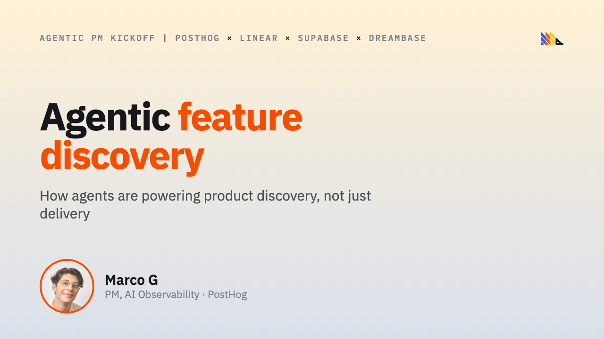
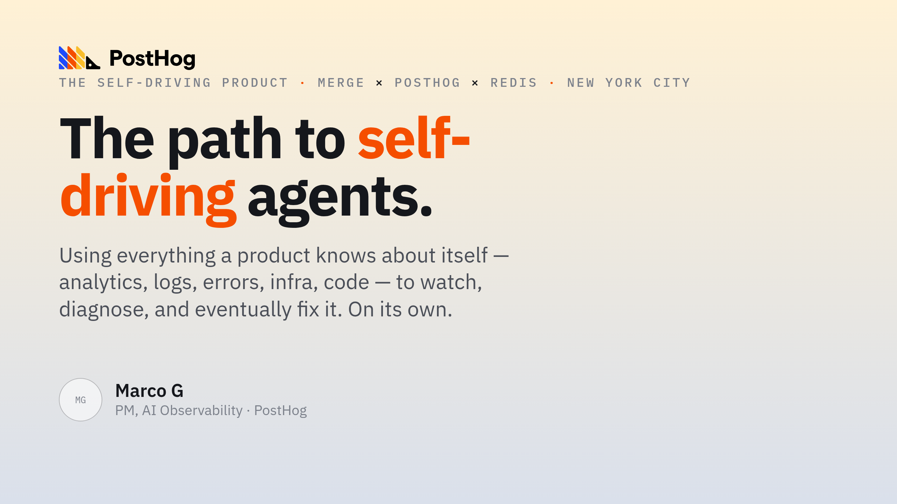
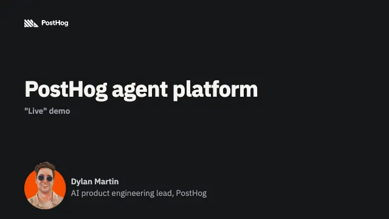
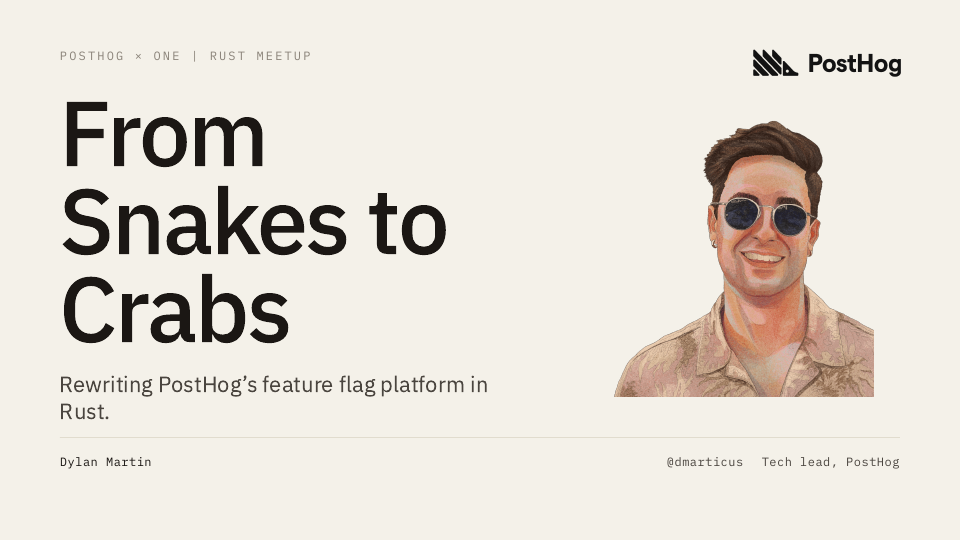

Agentic feature discovery
How agents are powering product discovery, not just delivery. One anonymized customer story end to end: Excel for AI, conversation clusters, sentiment evals, and the scout that turned an unhappy cluster into a report.
Open deck →
The road to self-driving agents
Using context and LLMs to go from siloed observability to self-driving. The road from tracing to evals to reports to signals that become fixes.
Open deck →
Stateless ClickHouse for stream processing
How we turned ClickHouse itself into our Kafka → CH inserter: Kafka engine + materialized view + Distributed table on nodes with no MergeTree, and deleted the service we were about to build.
Open deck →
PostHog agent platform: "live" demo
Describe an agent. Ship it live in minutes. A walkthrough of the platform's control and data planes: spec in, versioned revisions out, reachable from chat, Slack, webhooks, cron, and MCP.
Open deck →
From Snakes to Crabs
Rewriting PostHog's feature flag platform in Rust: why the Python service hit a wall (ORM mega-queries, the GIL, connection pooling) and what the rewrite bought us.
Open deck →More talks coming.
Add yours with a PR.